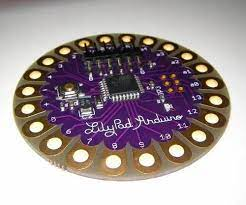

See Me Safe
El ciclismo se ha convertido en una forma popular de transporte y recreación en todo el mundo, y en Paraguay no es una excepción. Cada vez son más las personas que a diario recorren las calles de Asunción y las demás ciudades metropolitanas sobre una bicicleta, ya que es una opción viable, económica y saludable para transportarse.

Sin embargo, a pesar de su creciente popularidad, los ciclistas enfrentan desafíos significativos, y uno de los más preocupantes es la falta de visibilidad durante su circulación en la vía pública. La poca iluminación adecuada en las bicicletas y la ausencia de elementos reflectantes en la vestimenta y los equipos de seguridad hacen que los ciclistas sean menos visibles durante las horas de poca luz o en condiciones climáticas adversas.
Ante esta preocupante situación, se plantea implementar la construcción del prototipo de una chaqueta inteligente que indique la dirección de giro del ciclista. Estas prendas de vestir están diseñadas con luces LED incorporadas en la parte trasera, permitiendo a los ciclistas señalizar sus movimientos de giro de una manera más visible y efectiva, reemplazando las señales básicas que se realizan con los brazos.
Chaleco Señalizador Para Ciclistas
Informacion general
El presente proyecto busca implementar la utilización de una chaqueta inteligente que indique la dirección de giro del ciclista como método de señalización en la vía pública, a fin de garantizar la seguridad del usuario.
informacion sobre el proyecto
El trabajo nos presenta un chaleco el cual tiene la funcionalidad de servir como una manera de indicar a los conductores ciclistas, conductores de vehiculos o peatones las acciones que realizara el conductor a la hora de manejar la bici, este proyecto funciona gracias a la incorporacion de ciertos comentes los cuales fueron programados desde cero, los cuales tiene la propiedad de poder facilirtar al usuario y/o portador del prototipo del chaleco esas.
El chaleco tiene la propiedad de no tener ningun boton para controloar los señaleros incorporados en el chaleco, en vez de eso incorpora la propiedad de que con el giro del brazo en la direccion izquierda o derecha indicara la direccion en donde desea girar el conductor.
En palabras simples el chaleco tiene la funcionalida de dar una señal medienate los led incorporados en la espalda, los cuales serviran para dar una señal delo que hara el ciclista en este caso ya sea dar la indicacion de que va girar a la derecha o izquierda, así como tambien brindara una manera más comoda y sencilla de incorporar un señalero a una bicicleta.
Objetivo del proyecto
Al implementar la Chaqueta Inteligente como un método de señalización puede lograr disminuir considerablemente los riesgos de causar siniestros viales, ya que aumentaría la visibilidad del ciclista, además de indicar de forma directa a los demás usuarios de la vía la dirección a ser tomada.
el chaleco tendra el objetivo de aumentar el uso de las bicicletas gracias a la posibilidad que nos brindar la informar a los conductores, peatones y otros ciclistas sobre el proximo movimiento a realizara el portador del chaleco. Con lo anteriormente dicho del chaleco se puede acotar que este proyecto sera una forma mas facil y rapida de inplementar un señalero para el uso en la via publica.
Funcionamiento
Giro
La posición inicial del Sensor (1) es de 0 grados, cuando la lectura del sensor sea de 30 grados a 60 grados, los ledes que están por la parte derecha de la chaqueta comenzaran a parpadear durante 10 segundos, luego de ello se apagaran transcurrido el tiempo. Pasará lo mismo con los valores -30 grados y -60 grados para los ledes del lado izquierdo.
Ventajas Del Chaleco
- La primera ventaja con respecto a los chalecos convencionales es que este logra una mayor visibilidad del ciclista a la hora de transitar por la vía y mas en horas de la noche.
- La segunda con respecto a otros chalecos que realizan lo mismo es que nuestros componentes son cocidos por la chaqueta, lo que logra una mayor comodidad a la hora de portarlo, ya que nos deshacemos de la mayoría de bolsillos grandes y molestos.
- La tercera ventaja es que, al utilizar una batería recargable, el uso del chaleco no requiere estar gastando en baterías todo el tiempo, ayudando así en pequeña medida al medio ambiente.
- Las ventaja que aportaría al usuario en su estilo de vida y al medio ambiente, ya que el uso de la bicicleta y sus implementos es una alternativa cada vez más viable por la inmensa contaminación que producen los medios de transporte de combustión que emanan gases de invernadero.
Construccion y materiales utilizados
Componentes a utilizar
Arduino LilyPad ATmega328P:
El Arduino LilyPad es una variante especial de Arduino diseñada específicamente para proyectos de electrónica vestible (wearables). Es una tecnología desarrollada por Leah Buechley y diseñada en coordinación con SparkFun, y su principal objetivo es permitir a los diseñadores, artistas y aficionados incorporar componentes electrónicos en textiles y prendas de vestir para crear dispositivos portátiles interactivos.
Características técnicas:
- Microcontrolador: ATMega328V.
- Velocidad de reloj: 8 MHz.
- Voltaje de trabajo: 3,3V.
- Voltaje de entrada: 2,7 a 5,5 voltios.
- Pinout: 14 pines digitales (6 PWM) y 6 pines analógicos.
- 1 puerto serie por hard-ware.
- Memoria: 16 KB Flash (2KB para bootloader), 1KB RAM y 512 Bytes Eeprom

Modulo GY-521 MPU6050:
El módulo GY-521 MPU6050 es un dispositivo de medición inercial que combina un acelerómetro de tres ejes capaz de medir la aceleración lineal en los ejes x, y, e z, proporcionando información sobre los cambios de velocidad, y un giroscopio de tres ejes, que mide la velocidad angular o la tasa de cambio en el ángulo de rotación en x, y, e z, permitiendo determinar la orientación y rotación del objeto.
Características técnicas:
- Chip: MPU-6050
- Fuente de alimentación: 3V – 5V
- Rango del giroscopio: + 250500 1000 2000 ° / s
- Rango de aceleración: ± 2 ± 4 ± 8 ± 16 g
- Convertidor AD de 16 bits integrado en chip, salida de datos de 16 bits
- Distancia entre pines 2,54 mm
- Comunicación: I2Cyyu
Tira de LEDs:
Una tira que combina varios ledes de alta luminiscencia que funciona a partir de 12V CC

Hilo Conductor Eléctrico de Acero:
El hilo conductor eléctrico es un tipo de cable utilizado para transportar corriente eléctrica de un punto a otro y encuentra recubierto por un material aislante, el cual protege al conductor de posibles daños y también evita la fuga de corriente eléctrica. Está diseñado para utilizarse en proyectos Wearables ya que proporciona un agarre muy firme sobre el tejido a coser.
Características técnicas:
- Hilo de fibra de acero inoxidable
- Resistencia: 28 Ω / 30 cm

Modulo regulador de Voltaje para Arduino XL6009E1:
Su función es entregar un voltaje de salida constante regulada y es capaz de transformar un nivel de voltaje a otro mayor. El XL6009 es un módulo “Step-Up” de alto rendimiento con corriente de conmutación de 4 Amperios de salida, con una eficiencia del 94%.
Características técnicas:
- Módulo de naturaleza: Boost no aislado (BOOST)
- Método de rectificación: Rectificación no sincrónica
- Intervalo de entrada: 4 A (máximo), sin carga 18 mA (entrada 5v, salida 8V, sin carga inferior a 18 mA). Cuanto mayor sea el voltaje, mayor será la corriente en vacío.
- Eficiencia de conversión: <94% (cuanto mayor sea la diferencia de presión, menor será la eficiencia)
- Frecuencia de conmutación: 400 kHz
- Ondulación de salida: 50 mV (cuanto mayor es el voltaje, mayor es la corriente, mayor es la ondulación)
- Regulación de carga: ± 0,5%
- Regulación de tensión: ± 0,5%
- Temperatura de funcionamiento: - 40 °C ~ + 85 °C
- Dimensiones: 43 x 21 x 14 mm
Estructura
El arduino Lilypad estará conectado a una bateria recargable de 3.5V por los pines VCC y GND del arduino, que siguiendo estará conectado al MPU 6050 por los pines 5V y GND de arduino a los pines VCC y GND del sensor para que este quede alimentado, luego los pines analogicos A4 y A5 van conectados a las entradas SCL y SDA del sensor para la detección de datos, siguiendo, el pin digital 2 del arduino a la entrada INT del sensor para la comunicación del Arduino con el sensor. Los ledes estaran conectados a los pines digitales de arduino 11, 5 y 8 que pasaran por un amplificador de voltaje, para que las tiras de ledes queden alimentadas, y estas estarán en la espalda de la chaqueta.
El Lilypad estará cosido a la espalda de la chaqueta, junto a los Ledes, el sensor ira tambien cosido por la manga de la chaqueta, cerca de la muñeca , para que el giro del sensor sea mas práctico.
intregrantes del grupo
- Amira Cáceres
- Javier Ramirez
- Enzo Vargas
- Angel Vazquez